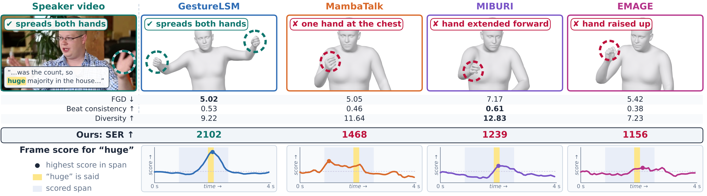
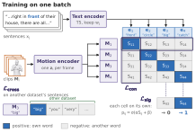
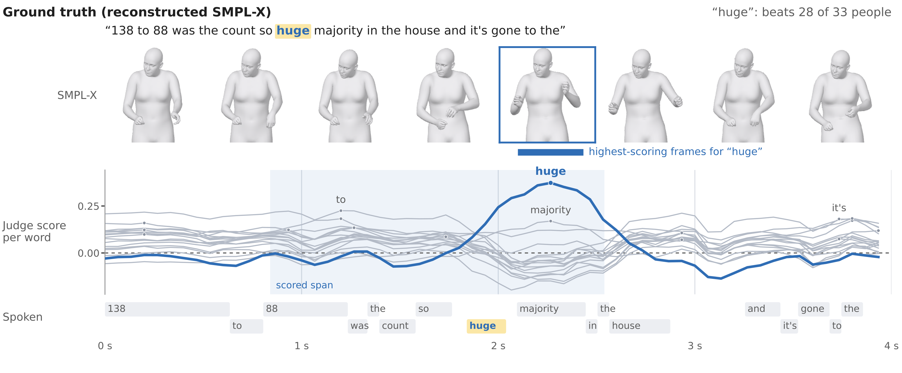
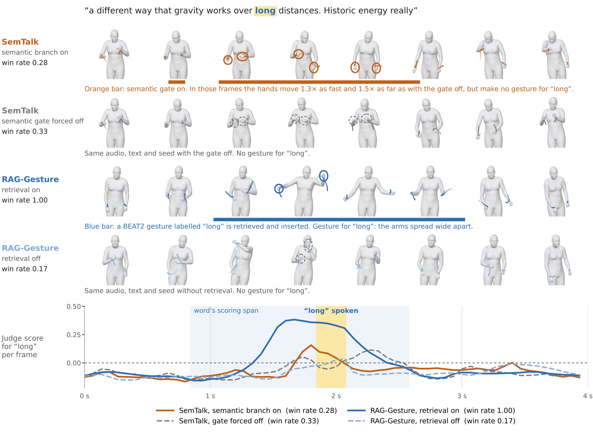
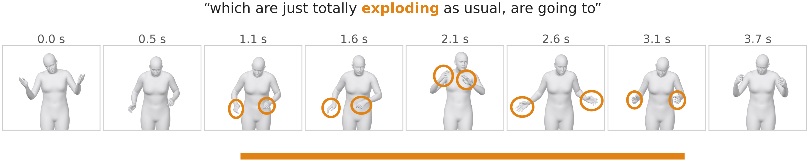

Moving Without Meaning: Benchmarking Semantic Expressiveness in Co‑Speech Gesture Generation
A benchmark of whether generated gestures show what the speech means, measured against real people.

Abstract
Co-speech gesture generators now animate characters in film, games and virtual agents. They produce natural motion that follows the rhythm of speech. However, they rarely produce meaningful gestures that show what the speech means. Moreover, current benchmarks measure only rhythm and realism, and none evaluate whether a gesture shows a word's meaning. Additionally, measuring the semantic expressiveness of a gesture has several challenges. People gesture for the same word in many forms, and some show it more clearly than others. A single ground-truth pose cannot capture this range. We introduce a benchmark that grades the semantic expressiveness of a generated gesture, i.e., how well it shows a word compared with how people gesture for it. Our judge is trained on word-level gesture labels from three datasets and scores how well a clip shows a marked word in its sentence. It then compares a generated clip's score with those of people who gesture for the same word. The comparison gives the Semantic Expressiveness Rating (SER), an Elo-style scale where a typical human gesture scores 1500. Our results show that the judge tells which word a held-out human gesture shows, while existing scorers stay near chance. Lastly, we benchmark ten recent generators and find that generating semantically expressive gestures remains challenging.
Watch the Judge
One sentence, the speaker and several generators. Below the motion, each clip's judge score for the marked word is drawn live, in the clip's colour. Clips that show the word rise inside the scored span; the others stay flat. Turn on the sound to hear the sentence.
The Benchmark
A word has no single right gesture. Instead of matching one recorded pose, we score how well a clip shows a word and compare that score with held-out people who gesture for the same word.

How the judge is trained

Does SER Reliably Measure Semantic Expressiveness?
The judge recognizes which word a held-out human gesture shows, where existing scorers stay close to chance.
| Scorer | GRW | Seamless | BEAT2 |
|---|---|---|---|
| FGD features | 0.591 | 0.584 | 0.577 |
| Kinematic statistics | 0.563 | 0.550 | 0.542 |
| CLIP ViT-L/14 | 0.529 | 0.512 | 0.513 |
| X-CLIP | 0.511 | 0.505 | 0.493 |
| TMR, released | 0.521 | 0.559 | 0.533 |
| TMR, retrained on our data | 0.771 | 0.742 | 0.706 |
| Judge (ours) | 0.834 | 0.781 | 0.730 |
Controlled edits
We change real gestures from 606 GRW samples in controlled ways: shrink the movement, shift it in time against the speech, or mix in another word’s gesture. Each edit should lower SER toward the floors, while blending a person’s gesture for the word into generated motion should raise it.
SER after controlled edits
606 GRW samples, 95% CI on hoverSER follows controlled edits. Every edit lowers SER gradually toward the floors (shaded), and mixing keeps the amount of movement about the same, so the score does not just measure movement. Blending a held-out person’s gesture for the word into the generators’ output raises their SER from 1230 to 1387. Dashed line: the motion as recorded; shaded: the floors.
Agreement with people. Three raters compared 150 pairs of clips and chose the one that shows the marked word better. The judge agrees with the majority of two raters on 79% of the pairs of a generated clip and a human reference, close to the 83% agreement between raters.
What Does SER Reveal About Current Generators?
Semantically expressive gestures remain challenging for all ten generators, which leaves clear room for improvement.
Out of domain
GRW + Seamless, speech the generators never saw- 1RAG-Gesture + retrieval*1303
- 2SemTalk*1287
- 3MambaTalk*1282
- 4SynTalker1281
- 5DisCo1270
- 6StreamTalk1268
- 7RAG-Gesture, no retrieval1268
- 8GestureLSM1266
- 9CaMN1264
- 10EMAGE1261
- 11MIBURI1247
In domain
BEAT2, the generators' training data- 1RAG-Gesture + retrieval*1422
- 2RAG-Gesture, no retrieval*1381
- 3GestureLSM*1379
- 4CaMN*1365
- 5StreamTalk1363
- 6MambaTalk1362
- 7DisCo*1350
- 8SynTalker1343
- 9SemTalk1343
- 10MIBURI1328
- 11EMAGE1323
SER with 95% confidence intervals (hover a row). Bars start at 1200; the dashed line marks the ground-truth motion and the shaded band the two floors. *Significantly above the other-word floor. The ranks are close: out of domain, only RAG-Gesture with retrieval is clearly ahead, and two generators typically differ significantly only when their gap exceeds about 32 SER.
How the Judge Reads a Clip
The judge’s score for each word of the sentence over time, on the teaser’s sample, for the speaker and every generator (ordered by score). Clips that spread their arms score high for “huge”; the others barely move it.

SemTalk and RAG-Gesture: emphasis vs. retrieval

Why vision-language models fail

More Examples
Each video plays one benchmark sentence with its audio: the real speaker and six generators on the same 4 seconds. Each clip shows the share of human references for the marked word that it beats.
BibTeX
@inproceedings{anonymous2027moving,
title = {Moving Without Meaning: Benchmarking Semantic Expressiveness
in Co-Speech Gesture Generation},
author = {Anonymous Authors},
booktitle = {Under review},
year = {2027}
}